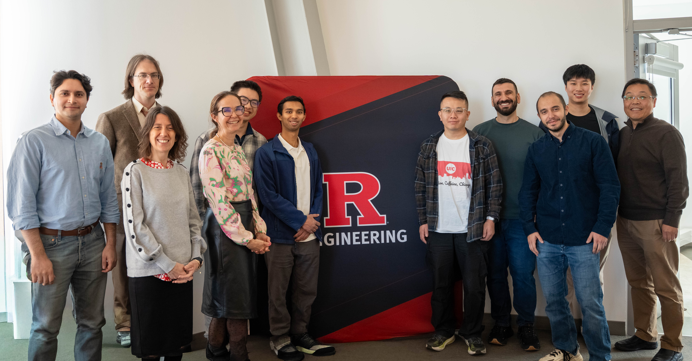

Everything Wrong with Modern AI (and How SOLIR Is Going to Fix It)
John S. Hyatt
Army perspective
Download slidesKICKOFF WORKSHOP
This page presents the program for the SOLIR MURI kickoff workshop.
Dean's Conference Room · Richard Weeks Hall of Engineering

WORKSHOP RESOURCES
Explore the ideas shared at the SOLIR MURI kickoff workshop. View PDF slides in a new tab or download the PowerPoint presentations.
John S. Hyatt
Army perspective
Download slidesYuan An
A source-actor architecture for knowledge diffusion
Download slidesSoheil Feizi
Toward dynamic ontologies
View slidesHulya Seferoglu
Kickoff workshop presentation
View slidesMuriel Médard
Kickoff workshop presentation
View slidesLOCATION
Dean's Conference Room
500 Bartholomew Road
Piscataway, NJ 08854
PROGRAM
9:00–9:10 — Lead PI Welcome & SOLIR Introduction, Salim El Rouayheb
9:10–9:15 — Rutgers School of Engineering Welcome, SOE Leadership
9:15–9:45 — Talk: Army Perspective & Expectations
9:45–10:00 — Discussion
10:00–10:30 — Talk: From data to functionality - towards an information theoretic ontology
10:30–10:45 — Discussion
11:00–11:30 — Talk: From One Source to Many Minds: A source-actor architecture for knowledge diffusion
11:30–11:45 — Discussion
11:45–12:15 — Talk: Learning and Controlling the Structure of Reasoning in Language Models: Toward Dynamic Ontologies
12:15–12:30 — Discussion
2:00–2:30 — Talk: Communication-Efficient Learning & Inference
2:45–3:15 — Talk: Resilience and Privacy in Decentralized Intelligence Towards Ontology-Guided Learning and Reasoning
3:15–3:30 — Discussion
Group discussion with all PIs and Army representatives.
John Hyatt / DEVCOM ARL
Salim El Rouayheb